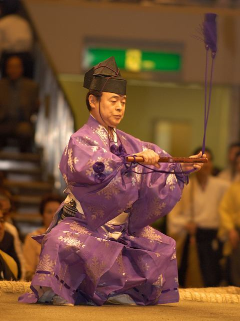
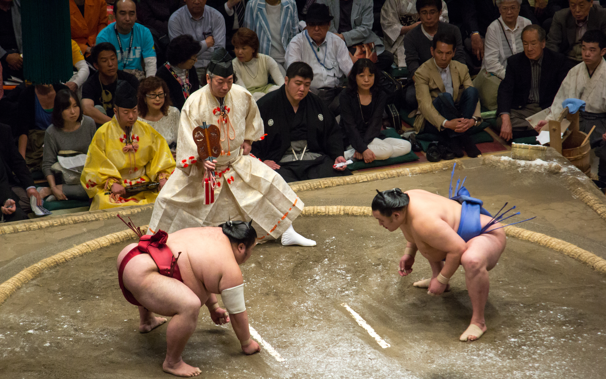
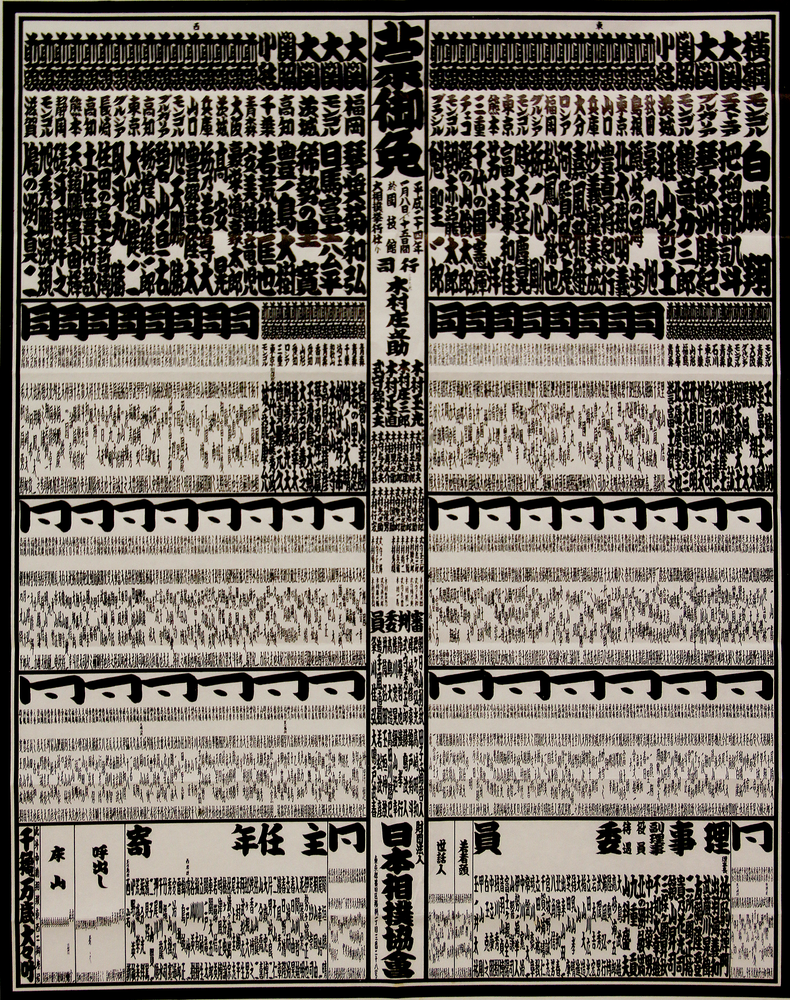

Who is the Gyoji?
A gyoji is a referee who is employed by the Japan Sumo Association to do many things, like refereeing bouts, presiding over ring-entering ceremonies, and preserving sumo culture, amongst other obligations.

